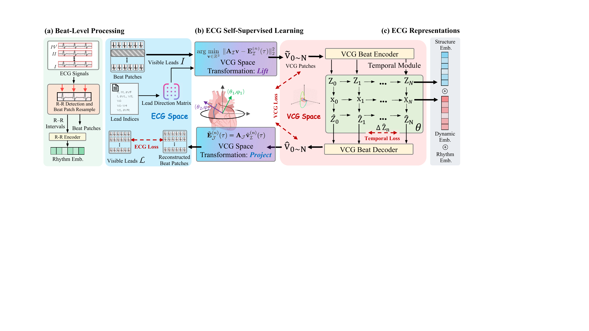
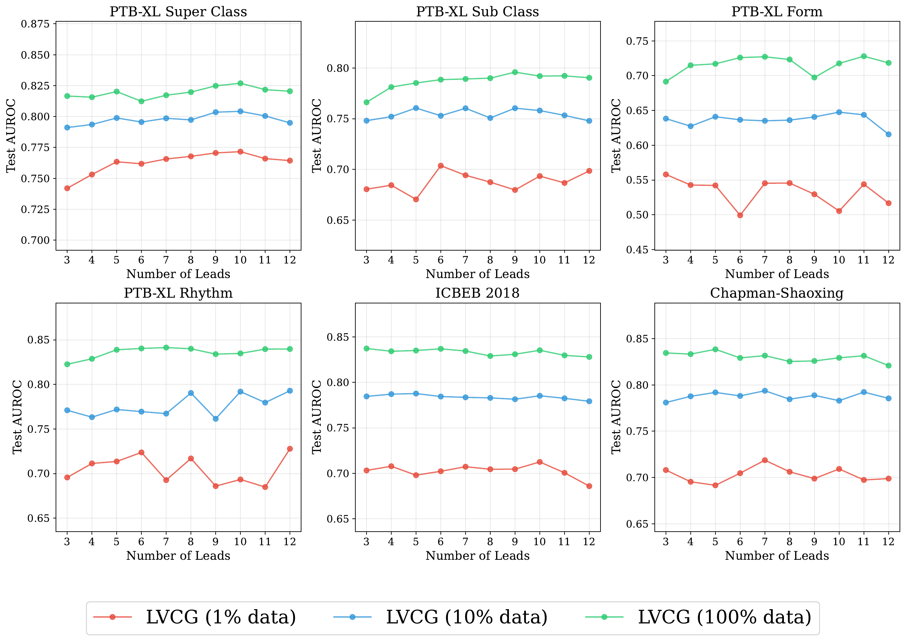

Overall Pipeline

Pipeline of LVCG
LVCG performs self-supervised multi-lead reconstruction through a latent VCG space — beat processing, geometry-induced lift/project, VCG token bottleneck, and GRU temporal modeling.
Model Architecture

Architecture of LVCG (Fig. 1)
(a) Beat-level processing · (b) VCG space transformation · (c) VCG beat encoder and temporal module.
The 12-lead ECG is many linear views of one 3D cardiac electrical field. LVCG learns ECG representations in a physically-grounded latent VCG space via multi-lead reconstruction with geometry-induced lift and project operations — yielding view-invariant embeddings that generalize under domain shift.
Given visible leads $\mathcal{I}$, LVCG lifts to VCG via Tikhonov least-squares, encodes beat morphology through a token bottleneck, models inter-beat dynamics with a GRU, and projects back to reconstruct masked leads $\mathcal{J}$. The training objective combines ECG reconstruction, VCG reconstruction, and temporal consistency: $\mathcal{L}=\mathcal{L}_{\text{ECG}}+\lambda_{\text{vcg}}\mathcal{L}_{\text{VCG}}+\lambda_{\text{temp}}\mathcal{L}_{\text{temp}}$.
Partial-Lead Reconstruction

Self-supervised multi-lead reconstruction
Observe $K$ leads, recover the full 12-lead ECG through the latent VCG trajectory.